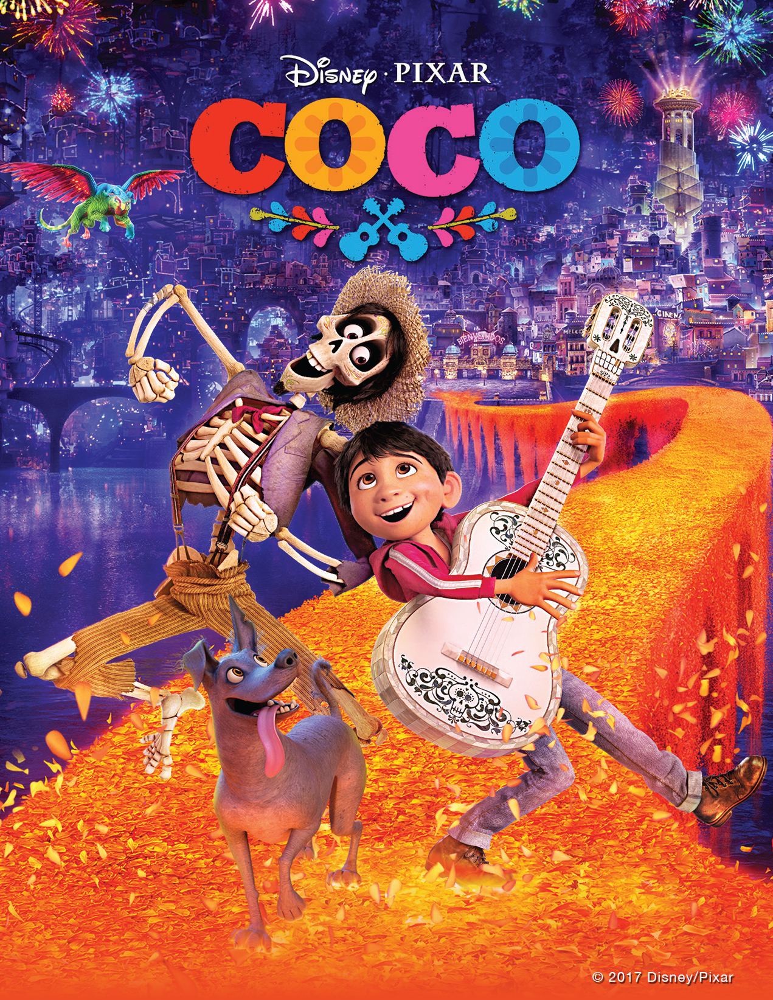

NETFLIX
NETFLIX

Miguel és un nen que somia amb ser músic, però la seva família l'hi prohibeix perquè el seu rebesavi, músic, els va abandonar, i volen obligar a Miguel a ser sabater,
com tots els membres de la família. Per accident, Miguel entra a la Terra dels Morts, d'on només podrà sortir si un familiar difunt li concedeix la seva benedicció, però la seva
rebesàvia es nega a deixar-ho tornar amb els vius si no promet que no serà músic. A causa d'això, Miguel escapa d'ella i comença a buscar el seu rebesavi.